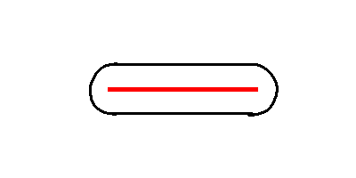

Pepperoni Slayer
This was the final project for my high school AP Computer Science class. You can see a short youtube video about it here
TLDR
It's another 3d engine, but using more naive approaches. These approaches are actually slightly more intuitive to understand though so we might get into some details about it.
It also has a pretty fun wave survival game built around it. I'm quite proud of how actually playable it is.
The engine
Pepperoni slayer can draw quadrilaterals in any orientation in theory, however they are limited to cardinal directions for collision purposes (oh boy is the collision bad, I forgot about that).
Rendering works on a very simple principle. An object takes up a certain portion of your fov, which we can calculate using inverse trigonometric functions.
Projecting 1 point
For simplicity's sake, let's first imagine that the camera only every faces in one direction and that we are in 2 dimensions.

When we are projecting, we are trying to find out where this point should sit on our screen. The way this algorithm works is that the point is some angle theta away from the "looking axis" of the camera.
We then have to simply find the ratio of this angle to the angle of the field of view.
This angle should then be multiplied by the number of pixels that makes up HALF of that axis's length on the screen. This is how far away the point should be drawn on that axis from the center of the screen.
We then just do this for the y axis as well. And voila! We have projected from 3d to 2d.
Rotating the camera (yaw) is simply done by rotating the world by the negative of the cameras yaw, projecting, and then rotating back.
For some reason I couldn't figure out pitch. I think it was a problem with the projection. So I ended up doing a pseudo pitching algorithm which ended up looking very wonky at extreme angles, so the player's pitch is limited to like 45 degrees in the actual game.
Problems encountered
Points behind the screen
Points behind the screen get mangled as per usual with projection.
I didn't think of a clever solution like I did in demise, instead, I developed a sub optimal solution and moved on, like a true engineer.
I figured I could get around this by simply not projecting points that were behind the camera, however this led to problems with quadrilaterals which were both in front of and behind the camera.
My (very crappy) solution was to split a quad up into many points (around 40 if I recall correctly), and project each of those individually. Then points behind the camera could be thrown out and there would still be a large amount of points in the wall to be drawn on the screen.
Rendering Order
This was one of the hardest problems I tried to solve with this project.
If you read the demise section, you learned all about the BSP which is a fancy way to render objects in the correct order on screen. There was no such thing for this project.
I thought this would be pretty easy. How do you tell which object should be drawn on top of the others on screen? Easy - it's just the one that is closest.
While this is a simple solution, it hides a much more complex beast, determining which object is closest.
Pretty much the way that I did this was to choose a point in the center of the quad to be drawn, and use that to determine the distance of the entire quad to the camera.
So I took all the quads, threw them into a big ArrayList, then sorted it every frame.
This slowed the machine down considerably to say the least. And it didn't even work properly most of the time!
I didn't ever solve it not working properly, but I did fix the speed somewhat.
Since this was my first CS class, I remembered a bubble sorting algorithm that we learned. I knew that it was slow, but what if instead of doing an entire bubble sort every frame, we just did 1 iteration of it?
By just doing one iteration of the bubble sort per frame, we reduce complexity to O(n), while sacrificing accuracy.
It gets sorted eventually, not quickly.
Collision
I had to think of a way for the player to collide with a wall in 3d. Pretty much, the way it works in this game is if the player is a certain distance away from the wall in one axis, it reverts the player's speed in that direction.
This works well enough, but what if a player enters a wall head on. All of a sudden our current model will trap the player inside the wall. Since they are within that distance of the wall on it's normal axis, it will reject their speed in the direction of that normal axis. This means the player will be moving in the direction of the wall until they leave its hitbox.
One solution to this is to add rejection to the player when they run into the "corner" of the wall. Pepperoni slayer goes about this by basically creating a cylindrical hitbox at the corners.
So the hitbox ends up being like this.
In retrospect this is not a terrible solution, but it could definitely be better.
Reflection
This project is super cool. I still play it from time to time just to see if my skills are up to par. The projection algorithm was naive, but completely original, which is definitely okay. It helped me a lot in understanding more complicated algorithms in the future.
I'd say not bad for a first big project.